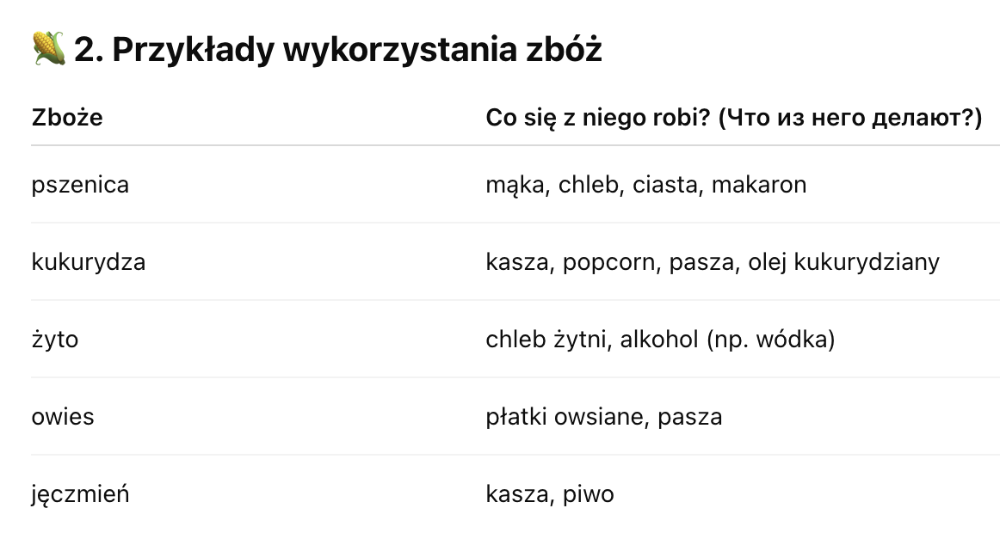

Przyroda > Swiat roślin > Wykorzystanie zbóż
Swiat roślin
🌾 Wykorzystanie zbóż
(Использование злаков)
🍞 1. Co robi się ze zbóż?
Что делают из злаков?
Zboża to ważne rośliny, które dają nam dużo różnych rzeczy, które używamy na co dzień:
- Mąka – zboża się mieli, żeby zrobić mąkę.
- Chleb – z mąki piecze się chleb.
- Kasze i płatki – z niektórych zbóż robi się kasze (например, пшеничная, гречневая) и хлопья (например, овсяные).
- Pasza dla zwierząt – zboża są także pożywieniem dla zwierząt, np. kur, krów, świń.
- Alkohol i oleje – z niektórych zbóż produkuje się alkohol (np. piwo) i oleje roślinne.

🏠 3. Dlaczego zboża są ważne?
-
Почему злаки важны?
- Są podstawą naszej codziennej diety – jedzą je ludzie na całym świecie.
- Pomagają karmić zwierzęta gospodarskie.
- Z nich powstają różne produkty, które znamy i lubimy.